Conta, nuvem e fliperamas · 1.29.0
Continuidade entre Windows e web, novo HUD e 24 fliperamas no mapa.
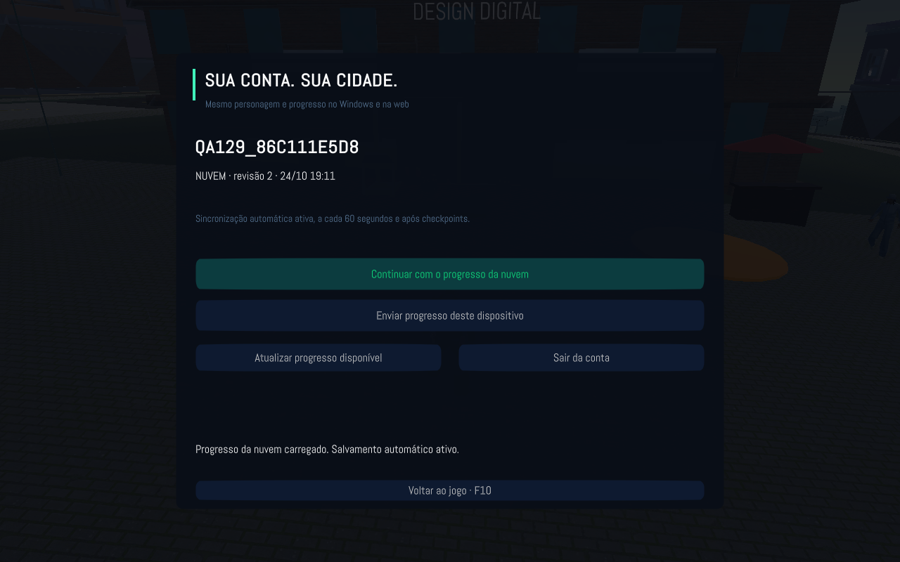
Nuvem · conta-nuvem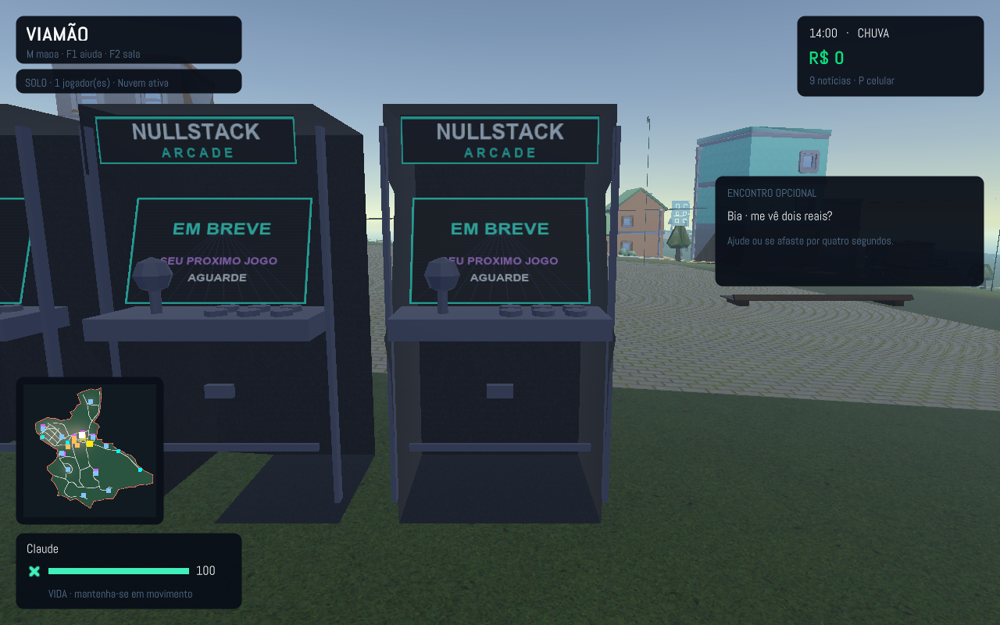
Nuvem · fliperama-detalhe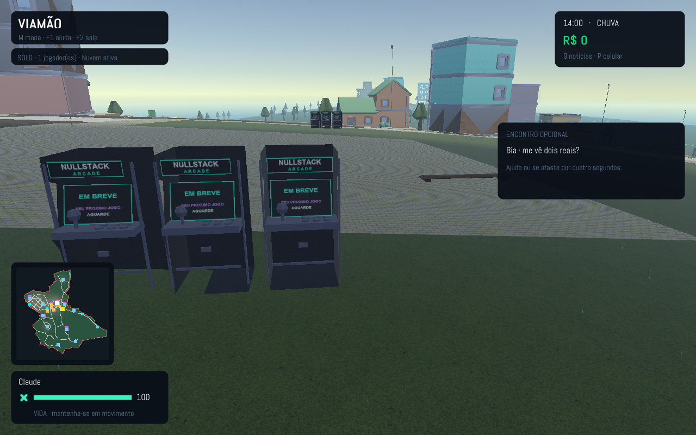
Nuvem · fliperamas-local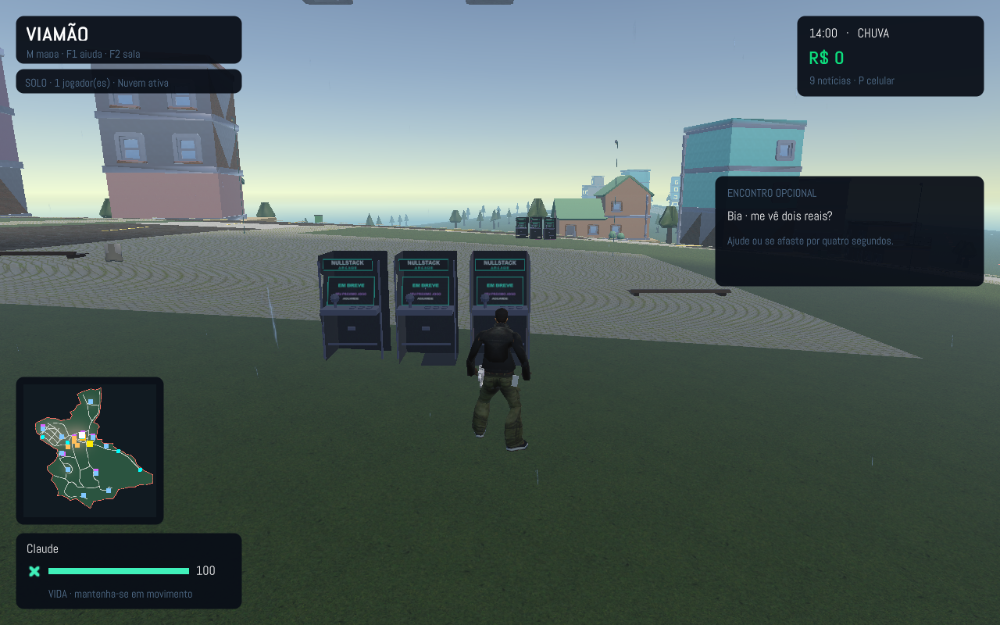
Nuvem · hud-129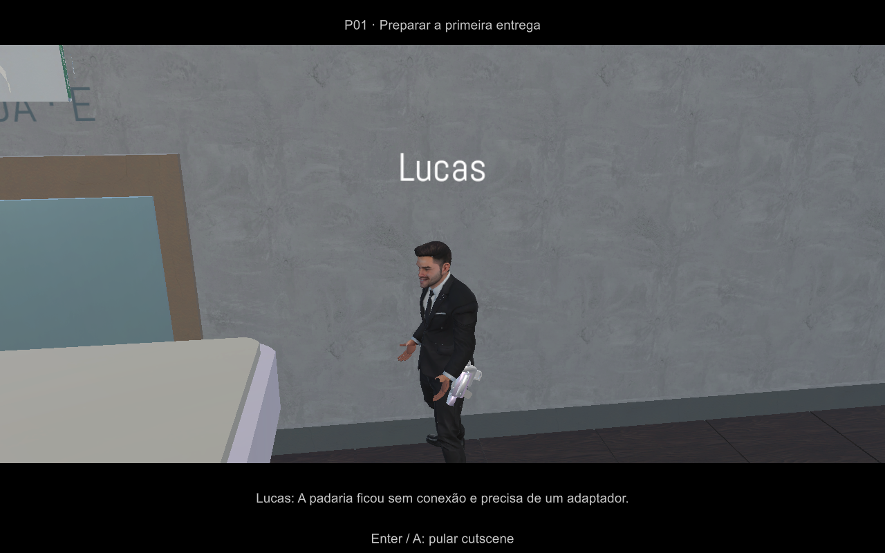
Sistemas · cutscene-missao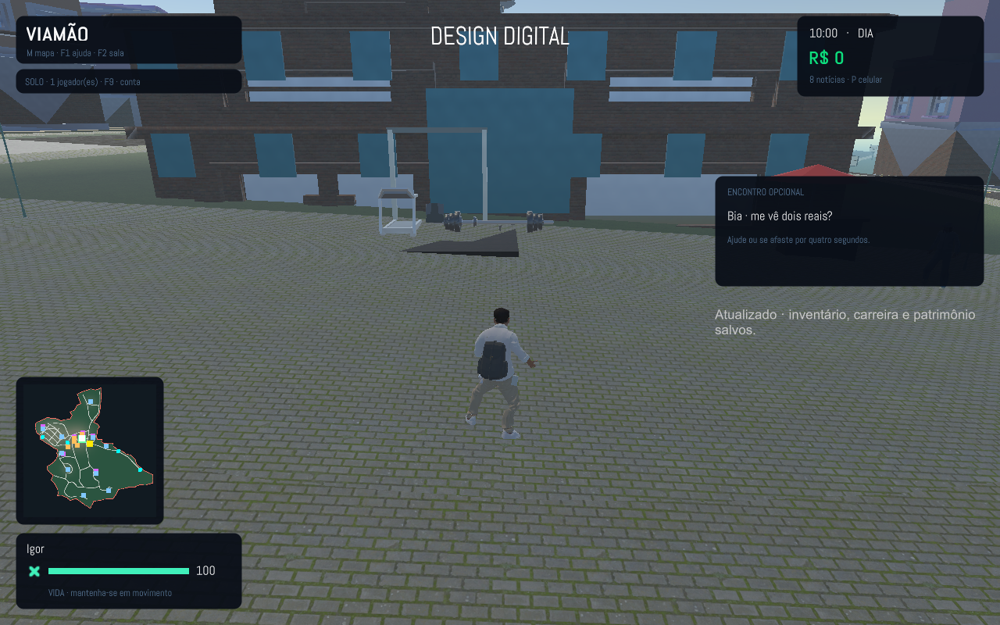
Sistemas · garagem-persistente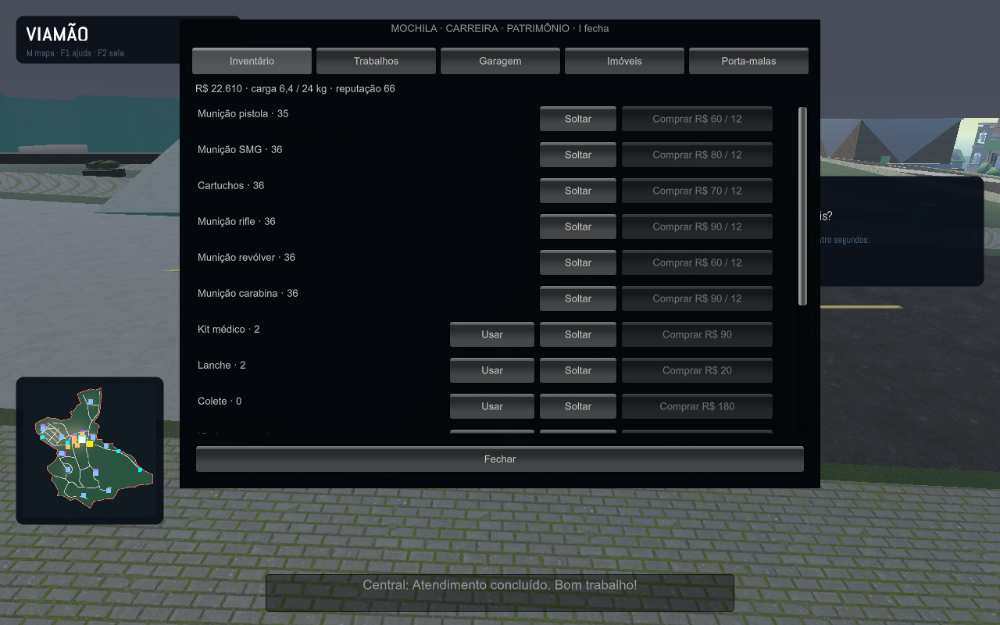
Sistemas · mochila-carreira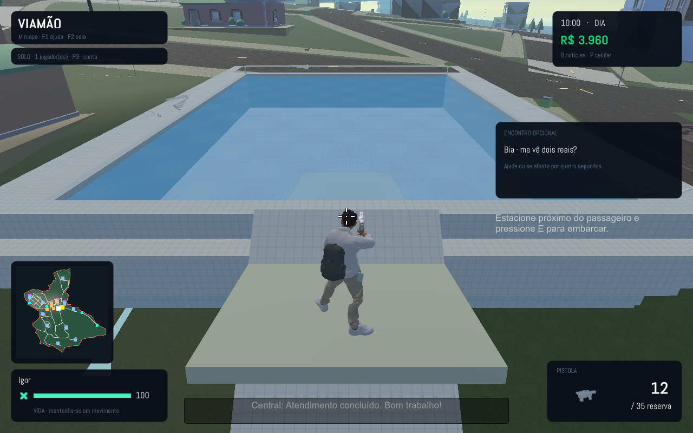
Sistemas · piscina-entrada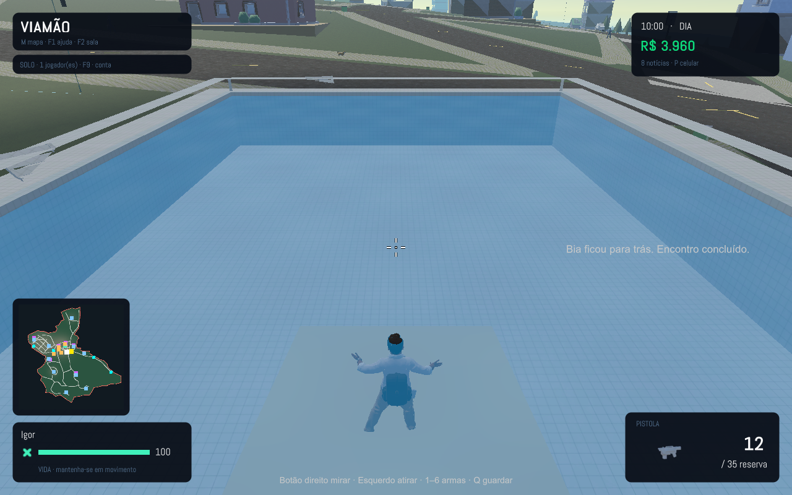
Sistemas · piscina-nadando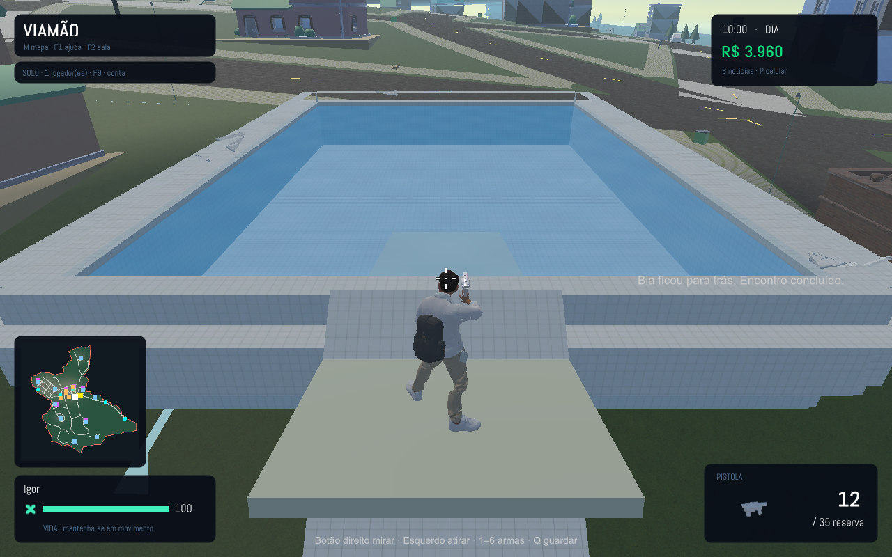
Sistemas · piscina-saida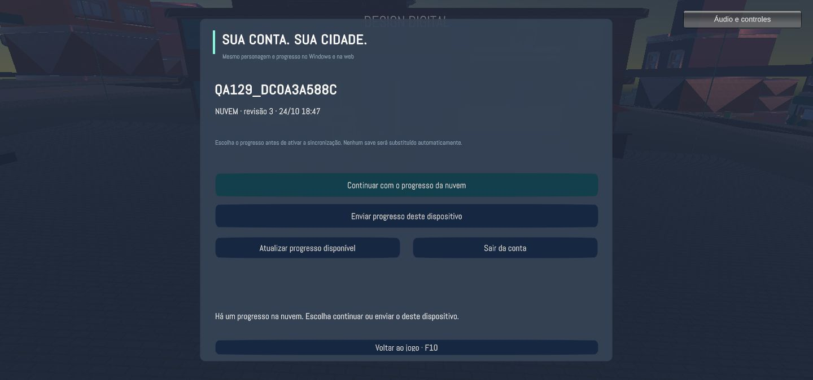
Navegador · conta-windows-web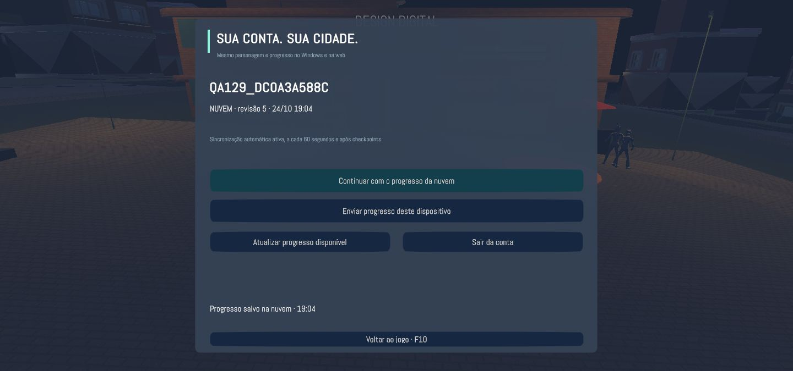
Navegador · sincronizacao-web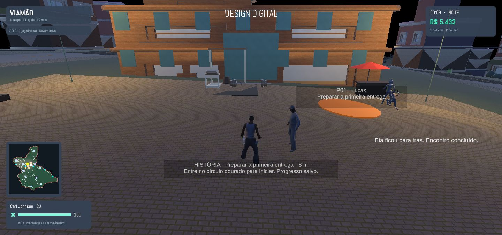
Navegador · web-para-nuvem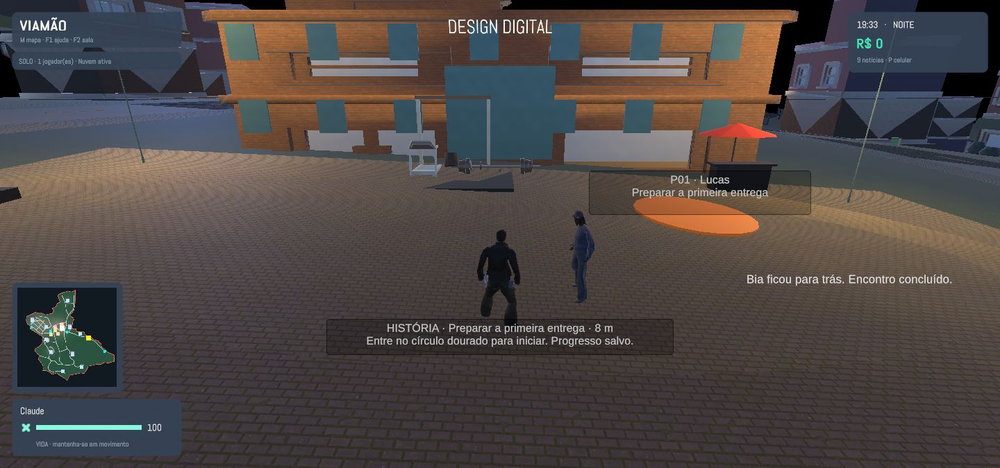
Navegador · windows-para-web